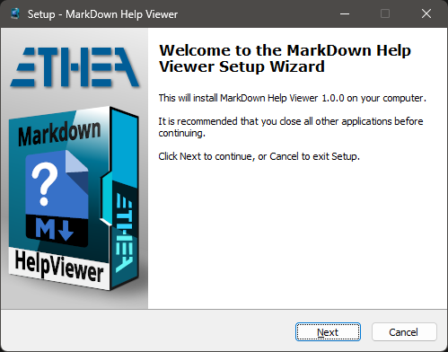
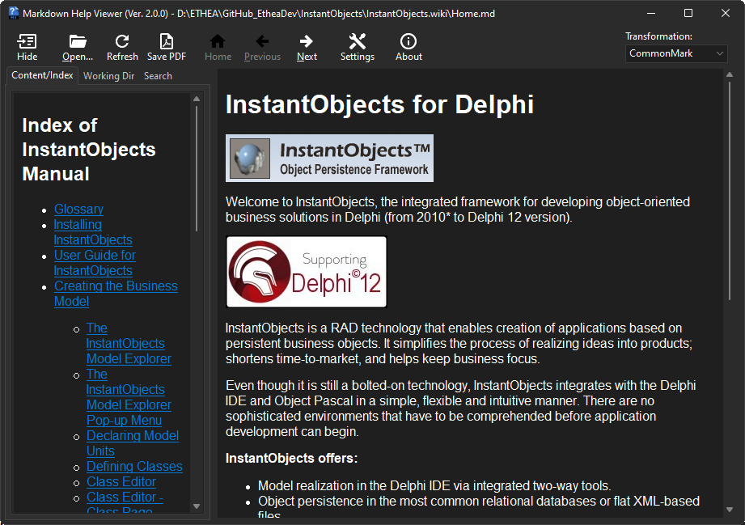
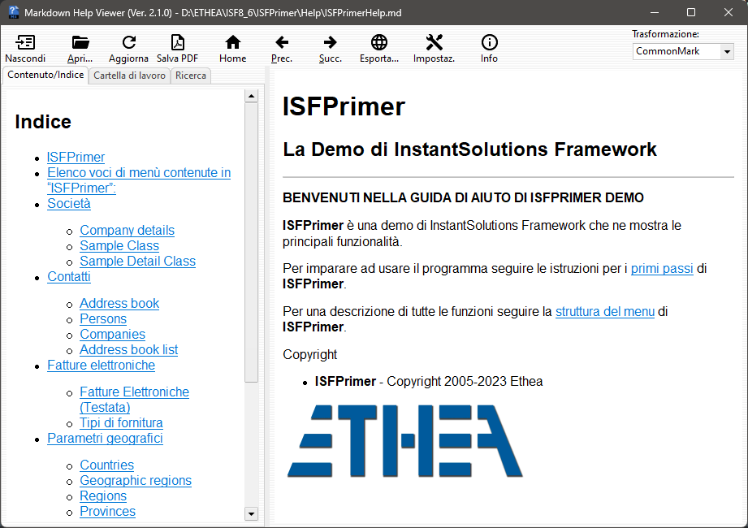

Markdown Help Viewer (Windows App and Delphi Component)


Related links: embarcadero.com - learndelphi.org
An integrated help system based on files in Markdown format (and also html), for any Windows applications
-
A “Setup” of the pre-built “Markdown Help Viewer” ready to use.
-
A unit (MarkdownHelpViewer.pas) to add the interface to Delphi Help System of your Delphi Application (from XE6 version to latest)
-
Two VCL Visual Components to automatically show Markdown files formatted in HTML:
- TEdgeMarkdownViewer (from Delphi 12): based on TEdgeBrowser (Microsoft Edge WebView2), it shows also math formulas and mermaid diagrams
- TMarkdownViewer (from XE6 to Delphi 11, optional from Delphi 12): based on HTMLViewer
-
A simple demo to show how to integrate the Help in your application, as exaplained here…
-
For editing and prepare the Help manual of your application we suggest to use the Editor contained into
“Markdown Shell Extensions” project.
Documentation
Follow the Project Site to know all the markdown tools and the Delphi components: Markdown Processor, Markdown Text Editor and Markdown Help Viewer.
Features
-
Supports Windows 10 and 11 (for 32 bits and 64 bits).
-
Uses the latest, empowered version of the Markdown Processor (2.0): CommonMark 0.31.2 and GitHub Flavored Markdown compliant engine. The default dialect is now GitHub (GFM + math formulas, alerts and mermaid diagrams, plus subscript, superscript, insert, mark, smart typography, heading ids and wiki links); CommonMark, GFM, DaringFireball and TxtMark are still available.
-
The documents are shown with Microsoft Edge WebView2 (TEdgeBrowser): math formulas (KaTeX), mermaid diagrams, GitHub alerts, modern CSS. When WebView2 is not available (or disabled in the Settings: “Use WebView2 (Edge) when available”) the viewer falls back to HTMLViewer.
-
Math formulas and mermaid diagrams (also charts: pie, bar and line charts) are drawn also without an Internet connection: KaTeX and mermaid.js are installed with the viewer (Scripts folder).
-
Themes (Dark and Light) according to user preferences of Windows Theme
-
Auto-detect Index file in the working folder
-
Very easy to integrate into Delphi Application, also in “embedded” mode.
-
Automatic check and download when a new version is available
Setup using the Installer
Click to download the MarkDownHelpViewerSetup.exe located also in the Release area. The Installer works both for 32 and 64 bit system. Warning: this setup installs only the viewer.
The viewer uses the WebView2 runtime of Microsoft Edge, already present in Windows 11 and in the updated Windows 10 systems: if it is missing, the documents are shown with the internal HTML viewer.

Manual installation of Packages
If you want to use the Delphi Component you need to manual Build and Install the packages.
Open the correct group-project file for your Delphi version, located into Packages folder (for example: Packages\D13\MarkDownViewerGroup.groupproj), or run the build script of your version (for example: Packages\BuildAllPackagesD13.ps1).
Delphi 12 and 13: Build the run-time packages:
- MarkdownProcessorXXX.bpl
- MarkDownViewerXXX.bpl (TEdgeMarkdownViewer: no dependency from HTMLViewer)
and Install the design-time package:
The component TEdgeMarkdownViewer is ready to use. If you still need the old TMarkdownViewer (HTMLViewer), build also the optional packages FrameViewerXXX.bpl and MarkDownViewerHTMLXXX.bpl and install dclMarkDownViewerHTMLXXX.bpl (they are not in the group project).
From XE6 to Delphi 11: Build the run-time packages:
- FrameViewerXXX.bpl
- MarkdownProcessorXXX.bpl
- MarkDownViewerXXX.bpl
and Install the design-time package:
The component TMarkdownViewer is ready to use.
Remember also to add those Search Path:
- {MarkdownViewerInstallDir}\Source
- {MarkdownViewerInstallDir}\Source\Components
- {MarkdownViewerInstallDir}\Source\AppInterface
- {MarkdownViewerInstallDir}\Ext\HTMLViewer\Source (only for TMarkdownViewer)
- {MarkdownViewerInstallDir}\Ext\MarkdownProcessor\source
Deploy an application with TEdgeMarkdownViewer
TEdgeMarkdownViewer (and the Markdown Help Viewer itself) uses the Microsoft Edge WebView2 runtime through WebView2Loader.dll, which must be distributed together with your application (next to the executable, in the 32 or 64 bit version of the executable): it is in the Bin32 and Bin64 folders of this project (from the Microsoft WebView2 SDK, see Setup\LICENSE-WebView2.txt). Use TEdgeMarkdownViewer.EdgeAvailable to check at runtime that both the loader and the WebView2 runtime are available.
Math formulas (KaTeX) and mermaid diagrams are drawn by JavaScript libraries: to show them also without an Internet connection, distribute the Scripts folder of this project (KaTeX 0.16.11 and mermaid 11.17.2, MIT License) next to your executable or in its parent folder, where TEdgeMarkdownViewer finds it automatically (or set the ScriptsFolder property). Without it the libraries are loaded from the jsDelivr CDN (the same versions).
Manual Build of the Viewer
If you want to manual Build the Viewer, you can Build:
{MarkdownViewerInstallDir}\Source\MDHelpViewer.dproj
Markdown Help Viewer in action
A useful Viewer for instant preview of Markdown formatted content help files (with auto-detection of Windows-Theme):

The Viewer is “localized” for some languages. In this example the GUI with Italian language:

Step to activate this Help into MarkdownHelpViewerDemo Application
Use MarkdownHelpViewer.pas (located into AppInterface folder) in dpr:
MarkdownHelpViewer in '..\..\AppInterface\MarkDownHelpViewer.pas',
then specify the default file of the help:
Application.HelpFile := ExtractFilePath(Application.ExeName)+'..\Help\Home.md';
If you have installed the viewer using the provided Setup, the installation folder of the Viewer is registere into:
HKEY_CLASSES_ROOT\Applications\MDHelpViewer.exe\Shell\Open\Command
so the interface can launch the viewer automatically.
If you don't want to use the provided Setup you can register the location of the Viewer built by yourself and deployed to a specific location, for example:
{$IFDEF WIN32}
RegisterMDViewerLocation(ExtractFilePath(Application.ExeName)+
'..\..\Bin32\MDHelpViewer.exe');
{$ELSE}
RegisterMDViewerLocation(ExtractFilePath(Application.ExeName)+
'..\..\Bin64\MDHelpViewer.exe');
{$ENDIF}
Rules to open the correct file using HelpContext or HelpTopic
To test the application you can lauch the Home.md help using the menu About/Help: in the OnClick handler invoke the help:
procedure TfmMain.HelpMenuItemClick(Sender: TObject);
begin
Application.HelpKeyword('home');
end;
In any Delphi component, you can define HelpType (htKeyword or htContext) and the specify HelpKeyword (string) or HelpContext (Integer).
When the user press “F1” inside the application, the HelpSystem is invoked with HelpKeyword or HelpContext.
Then the interface searches in the same folder of default file (specified into Application.HelpFile) the specific file using those rules:
Rules of precedence:
- first search a file named as the Keyword or the Context with any markdown extension (eg. 1000.md, MainForm.md)
- Then, try the Help Name and the Keyword (eg.Home1000.md, HomeMainForm.md)
- At least, try the Help Name and the Keyword with underscore (eg.Home_1000.md, Home_MainForm.md)
Release Notes
08 Oct 2026: ver. 3.0.0 (major version)
- Uses the new Markdown Processor 2.0: CommonMark 0.31.2 and GitHub Flavored Markdown compliant engine, with math formulas, GitHub alerts, mermaid diagrams and the legacy extensions (subscript, superscript, insert, mark, smart typography, heading ids, wiki links)
- New default dialect: GitHub. The dialect saved by the previous versions as CommonMark (the old default) is automatically converted to GitHub; the dialect is now stored by name in the settings
- Viewer based on Microsoft Edge WebView2 (TEdgeBrowser): math formulas with KaTeX, mermaid diagrams, alerts, PDF export with WebView2. Fallback to HTMLViewer when WebView2 is not available, or when “Use WebView2 (Edge) when available” is disabled in the Settings
- WebView2Loader.dll must be distributed with the viewer (installed by the Setup)
- Math formulas and mermaid diagrams (also charts: pie, bar and line charts) work also without an Internet connection: KaTeX 0.16.11 and mermaid 11.17.2 are distributed in the Scripts folder (installed by the Setup). TEdgeMarkdownViewer finds it automatically next to the executable or in its parent folder (new class function FindScriptsFolder and property EffectiveScriptsFolder), otherwise it loads the same versions from CDN
- TEdgeMarkdownViewer: new method SaveAsHTMLPage (saves the full page, asking the file name), property DocumentFileName (the file of the document, set by LoadFromFile) and event OnSaveAs (the “Save as” of WebView2)
- New component TEdgeMarkdownViewer (Delphi 12 and 13), with the same Markdown properties of TMarkdownViewer and of TMarkdownToHTML: ProcessorDialect, Extensions, AllowUnsafe, MathRendering, CssStyle, MarkdownContent, HtmlContent
- TMarkdownViewer: new Extensions and MathRendering properties, default dialect GitHub; the Markdown conversion is made by the TMarkdownToHTML engine of the Markdown Processor
- Packages: from Delphi 12 MarkDownViewer contains TEdgeMarkdownViewer and does not require FrameViewer; optional packages MarkDownViewerHTML / dclMarkDownViewerHTML for TMarkdownViewer. Group projects renamed MarkDownViewerGroup.groupproj
- The dialect combo boxes list all the dialects (DaringFireball, CommonMark, TxtMark, GFM, GitHub)
- Demo: the embedded help viewer is created at runtime (TEdgeMarkdownViewer from Delphi 12, TMarkdownViewer before)
- Fixed the translations of the Settings menu
22 Sep 2026: ver. 2.6.0
- Latest Stable version
- Fixed rendering remote Images in 64bit version.
- 2.5.x versions deprecated!
22 Sep 2026: ver. 2.5.7
- Fixed “Runtime error 217” on startup on any computer without RAD Studio installed: the viewer failed before showing any window, giving no clue about the cause.
- Warning: versions 2.5.5 and 2.5.6 cannot start on a machine without MidasLib.dll: please update to this version.
03 Sep 2026: ver. 2.5.6
- Fixed an Access Violation when downloading a new setup right after the automatic version check: the shared HTTP client was created only by the manual check, so the automatic path reached the download with no client at all.
- A missing setup file name or project URL is now reported with a clear message instead of an assertion, which is compiled out of release builds.
- Web help and repository are now kept distinct: the documentation points to https://ethea.it/docs/markdowntools/, while the Issues button and the new-version check point to GitHub.
01 Sep 2026: ver. 2.5.5
- TMarkdownViewer component: .html/.htm files are now recognized and rendered as HTML instead of being shown as source; fixed double rendering when loading a document, and the scroll position is now really preserved.
- Help interface: GetHelpFile('') returns the base file (DisplayTopic and GetHelpStrings were broken) and the query methods no longer raise exceptions when Application.HelpFile is empty.
- IPC: new Unicode WM_COPYDATA message with automatic fallback to the legacy ANSI one, so file paths with characters outside the current codepage are no longer lost; the receiver validates signature and payload size.
- Viewer: the index panel no longer lists the main document; fixed the per-file CSS path, the HTML export no longer alters the document text, internal anchors (#section) now work, and a confirmation is asked before opening non-web links.
- Settings: the PDF page orientation is now persisted, and the window position is correctly restored on secondary monitors (centered again if the saved screen no longer exists).
- Fixed the version check: ECheckNewVersionException is a real exception class (it used to swallow any exception, AV included), with explicit timeouts and the startup check moved to background.
- Remote images: no temporary files left behind, decoder chosen from the URL extension, limited manual redirects.
- Faster loading of large text files (single-pass reading with encoding detection from BOM or UTF-8 validation).
- Fixed source files encoding: accented literals were compiled as mojibake in ten units; repaired the affected Italian translations and translated CONFIRM_OPEN_LINK in all six languages.
- Code cleanup: removed dead code and unused units, reducing the executable size by about 435 KB.
- Version aligned to 2.5.5 on application, setup, design-time constant and all the packages projects.
06 Jul 2026: ver. 2.5.4
- Added a configurable HTML stylesheet (CSS) in Settings (Preview page), with CSS syntax highlighting.
- Added the “Allow unsafe HTML” option in Settings (off by default): lets native HTML (script, iframe, object…) in the markdown pass through to the output instead of being escaped.
- TMarkdownViewer component: new AllowUnsafe property (default False), passed to the markdown processor.
- The Settings dialog can now be closed with the Esc key.
- Updated the GUI translation files (XML).
26 Jun 2026: ver. 2.5.3
- Fixed Access Violation in the fenced code-block syntax highlighter when the theme or font changed (e.g. zooming the preview).
18 Jun 2026: ver. 2.5.2
- Fixed Packages for manual build
17 Jun 2026: ver. 2.5.1
- Fixed markdown processor for Table content
- updated Markdown Support Test.md file
08 Jun 2026: ver. 2.5.0
- Added syntax highlighting of fenced code blocks in the HTML preview, based on the language, like GitHub.
- Fixed duplicated entries in the Working Dir file list.
05 Jun 2026: ver. 2.4.2
- Text in the viewer is now selectable and can be copied with Ctrl+C.
11 Apr 2026: ver. 2.4.1
- Used new “modern” Styles available in Delphi 13.
- Added FrameViewer Package in package groups
20 Feb 2026: ver. 2.4.0
- Fixed position for “View” Button in multimonitor environment
- Changed Open Dialog with modern Layout
- Removed .txt files support
06 Nov 2025: ver. 2.3.7
- Fixed TCustomMarkdownViewer.ExportToFileHTML
- new Project Site for documentation
24 Aug 2025: ver. 2.3.6
- Added support for Delphi 13
- Automatic search for index name Home_Index.md before Index.md
- Enlarged Buttons to 80 pixels to fit translations
- Added Russian translations and updated other translations
- Translation Repository (xml) in Unicode format
- Removed Google Chart API support
- Fixed Restore Position in monitor with High-DPI
23 Mar 2025: ver. 2.3.5
- Added Custom Event Handlers to TMarkdownViewer component (OnFileNameClicked, OnURLClicked)
- Fixed Refresh also for Index page
- Fixed loading svg files in utf8 format
- Built with Delphi 12.3
26 Jan 2025: ver. 2.3.4
- Added Export to HTML of every markdown files
- Updated External libraries
16 Dec 2024: ver. 2.3.3
- Updated Demo for FireMonkey
14 Jun 2024: ver. 2.3.2
- Updated Packages to require correct HTMLViewer Packages
10 May 2024: ver. 2.3.1
- Update to latest HTMLViewer
- Fixed Preview for chinese chars
06 Apr 2024: ver. 2.3.0
- Updated Settings for Buttons Rendering
- Built with StyledComponents + SKIA (Delphi 12.1)
20 Mar 2024: ver. 2.2.0
- Fixed loading content when Viewer is already open
19 Mar 2024: ver. 2.1.2
- Added property “AutoLoadOnHotSpotClick” to TMarkdownViewer
- Fixed resize Font changing Monitor-DPI
- Fixed Toolbar switching Captions On/Off
- Reset scrollbar position to top after loading new file
3 Jan 2024: ver. 2.1.1
- Changed Toolbar to Styledtoolbar
- Support for different GUI languages (italian, French, Deutch, Portuguese, Espagnol)
- Fix for File names with spaces
- Added ISMultiLanguage library engine for translations
- Added xml files of translations
- Removed ini files
25 Oct 2023: ver. 2.0.1
- Added Export to HTML help files (experimental)
23 Oct 2023: ver. 2.0.0
- Added use of Skia4Delphi
- Added support for new image format (webp and wbmp)
- Uses AnimatedStyledDialogs for messages
- Updated Markdown library with best support for CommonMark transformation:
- Subscript text and Superscript text
- Formulas (using [Google Chart API])
- Markers
- Reference-style Links
20 Sep 2023: ver. 1.3.0
- Added Support for Delphi 12
- Close Viewer with Esc button
- Form-resize optimized
30 Jun 2023: ver. 1.2.0
- Restored “Settings” function on Viewer
- Fixed Component loading content from MarkdownContent property
- Fixed Component loading images using FileName (now searches in same folder)
29 Jun 2023: ver. 1.1.0
- Refactoring Folder/Source position (some files moved)
- Renamed “Markdown” identifier to “Markdown”
- Added Packages for other Delphi versions
- Added “refresh” button to reload file content
- Fix Resize performance
- Added “RegisterMDViewerServerRoot” to automate loading content into the Component
- Updated Component MarkdownViewer for autoloading content
23 Jun 2023: ver. 1.0.0
- Viewer with lot of functions:
- Full source code of Delphi Project (MDHelpViewer.dproj)
- Support for Windows Light and Dark Themes
- Settings available for easy customization of GUI
- Unit MarkdownHelpViewer.pas for Delphi Applications
Markdown Help Viewer in depth
Learn more about “MarkDown Help Viewer” within our wiki. Dive deeper into everything related to this tool, its features, and how to make the most of it.
License
Licensed under the Apache License, Version 2.0 (the “License”);
Unless required by applicable law or agreed to in writing, software distributed under the License is distributed on an “AS IS” BASIS, WITHOUT WARRANTIES OR CONDITIONS OF ANY KIND, either express or implied. See the License for the specific language governing permissions and limitations under the License.
Other libraries from Ethea:
SVGIconImageList - https://github.com/EtheaDev/SVGIconImageList/
StyledComponents - https://github.com/EtheaDev/StyledComponents
Delphi MarkdownProcessor - https://github.com/EtheaDev/MarkdownProcessor
Third parties libraries:
OpenSLL Library: Cryptography and SSL/TLS Toolkit
Copyright © 1998-2018 The OpenSSL Project. All rights reserved.
Delphi Markdown - https://github.com/grahamegrieve/delphi-markdown
Copyright (c) 2011+, Health Intersections Pty Ltd All rights reserved
Delphi Preview Handler - https://github.com/RRUZ/delphi-preview-handler
The Initial Developer of the Original Code is Rodrigo Ruz V.
Portions created by Rodrigo Ruz V. are Copyright © 2011-2023 Rodrigo Ruz V.
KaTeX - https://katex.org/
Copyright (c) 2013-2020 Khan Academy and other contributors (MIT License)
Mermaid - https://mermaid.js.org/
Copyright (c) 2014-2022 Knut Sveidqvist (MIT License)
Synopse/SynPDF - https://github.com/synopse/SynPDF
Copyright © Synopse: all right reserved.
HtmlToPdf - https://github.com/MuzioValerio/HtmlToPdf
Copyright © Muzio Valerio.
Image32 Library - http://www.angusj.com/delphi/image32/Docs/_Body.htm
Copyright ©2019-2023 Angus Johnson.
HTMLViewer - https://github.com/BerndGabriel/HtmlViewer
Copyright (c) 1995 - 2008 by L. David Baldwin
Copyright (c) 1995 - 2023 by Anders Melander (DitherUnit.pas)
Copyright (c) 1995 - 2023 by Ron Collins (HtmlGif1.pas)
Copyright (c) 2008 - 2009 by Sebastian Zierer (Delphi 2009 Port)
Copyright (c) 2008 - 2010 by Arvid Winkelsdorf (Fixes)
Copyright (c) 2009 - 2023 by HtmlViewer Team
External projects
To simpilfy compilation of projects they are added into ext folder
SVGIconImageList
HtmlViewer
vcl-styles-utils
markdownProcessor
StyledComponents